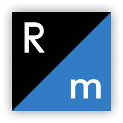

Customer Journey Map (карта пути клиента) — часть маркетинговой стратегии,
которая заключается в анализе поведения клиента от момента осознания
потребности до повторных коммуникаций с компанией. Позволяет увеличить
конверсии и продажи.
У нас в вышке CJM — неотъемлимая часть разработки проекта. Чтобы грамотно
выстроить карту, мы исследуем аудиторию, проводим опросы, интервью и
составляем портрет пользователя.
словарь дипфейса
Custdev
Customer Development (развитие потребителя) — тестирование идеи или
прототипа продукта на востребованность. То есть, это процесс получения
инсайтов от пользователей с помощью интервью и экспериментов.
Кастдев должен проводиться перед запуском MVP
(Minimum Viable Product — минимально жизнеспособный продукт). Сначала выявляется проблема, а потом разрабатывается продукт.
словарь дипфейса
Figma
Кросс-платформенный онлайн-сервис для дизайнеров интерфейсов и
веб-разработчиков. Ключевая особенность — совместная работа над
документами, что удобно в рамках групповых проектов в нашей школе.
словарь дипфейса
Партизанский маркетинг
Малозатратные методы продвижения и привлечения потенциальных клиентов.
Основные составляющие такой рекламы — креативность, виральность и
дешевизна.
словарь дипфейса
Illustrator
Редактор для создания векторной графики и коррекции изображений. Здесь мы
содаем логотипы, векторную графику, рисуем постеры, плакаты. Кратко —
«люстра».
словарь дипфейса
Indesign
Программа для создания макетов страниц для печатных и цифровых медиа —
плакатов, брошюр, книг. В индизайне мы собираем визуальные исследования.
Кратко — «индиз».
словарь дипфейса
Job Stories
Метод работы над продуктовыми фичами; их UX и UI. В отличие от User
Stories, здесь фокус смещается с личных характеристик на контекст; Job
Stories выявляют одинаковые мотивы поведения разных людей в конкретных
ситуациях.
Формула: Когда я
<описание ситуации>, я хочу
<мотивация>, чтобы
<результат>.
словарь дипфейса
JBTD
Jobs to Be Done
(работа для выполнения) — теория о поведении
пользователя, помогающая исследовать инсайты и трудности клиента. Перед
покупкой человек испытывает момент внутренней борьбы. Теория JTBD помогает
исследовать этот момент, чтобы разработать более востребованный продукт.
JTBD концентрируется не на том, как клиент пользуется продуктом, а зачем
он его купил; на системе принятия решений.
словарь дипфейса
KPI
Key Performance Indicators
(Ключевые покакзатели деятельности) —
индикаторы, определяющие степень достижения конкретных целей. Отслеживание
KPI позволяет оценивать успешность произведенных действий
Например, в роли индикаторов могут быть: трафик, конверсия, повторность
визитов, процент отказов, средний чек клиента или окупаемость инвестиций
словарь дипфейса
Ньюсджекинг
Один из видов партизанского маркетинга
словарь дипфейса
Photoshop
Многофункциональный графический редактор для создания, редактирования и
ретуширования любого типа растровых изображений. Благодаря инструментарию,
используется специалистами разных сфер. Кратко — «фш».
словарь дипфейса
Readymag
Онлайн-платформа для создания визуального, интерактивного контента. В
рамках курса мы используем редимаг для создания лонгридов, посадочных
страниц и портфолио. Возможность просто и быстро анимировать любой объект
визуально улучшает итоговый продукт.

словарь дипфейса
Ситуативный маркетинг
Реакция бренда на инфоповод, актуальный для его целевой аудитории, с целью
продвижения продуктов, повышения узнаваемости или привлечения новых
клиентов.
словарь дипфейса
Sketch
Графический редактор для MacOS, используемый в проектировании интерфейсов.
Такой же инструмент, как Figma, однако мы используем его реже. В крупных
корпорациях, где важна безопасность файлов, он более актуален.
словарь дипфейса
Soft
Сокращение от software — програмное обеспечение, цифровой продукт. На
Дизпроге и Дизпроме мы учимся проектировать софт. А для этого, в свою
очередь, также используем различный софт.
Далее расскажем, чем именно пользуемся в процессе обучения.
словарь дипфейса
Tilda
Блочный конструктор сайтов. Главная особенность — не требует навыков
программирования, а готовые блоки адаптируются под мобильные устройства.
Мы не используем тильду при обучении, но наши студенты собирают сайты под
заказ.
словарь дипфейса
user stories
При исследовании аудитории продукта, создается несколько собирательных
пользователей. Исходя из их характеристик, составляется пользовательская
история, то есть, объясняется роль юзера в системе, его потребность и
профит, который он получит после того, как воспользуется фичей.
Формула: Будучи <роль юзера>, я
<хочу что-то сделать>, чтобы
<достичь такой-то цели>.
словарь дипфейса
УТП
Уникальное торговое предложение — это презентация товара, в которой
описываются исключительные свойства продукта. Задача УТП — найти точки
соприкосновения с потребностями потенциальных потребителей и создать
положительное впечатление.
По сути, это яркая формулировка ценности вашего товара или услуги. УТП
необходимо при разработке лендинга, сайта, коммерческого предложения и
любой рекламной продукции.